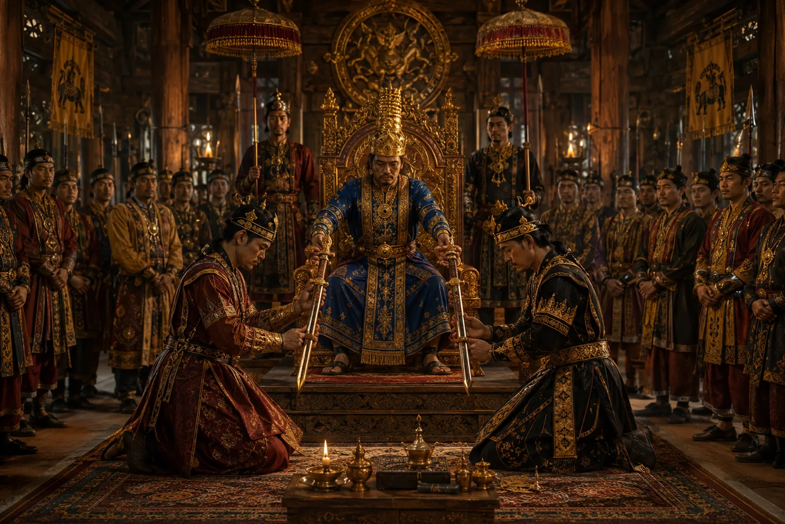

The Royal Court of Sukaphaa
c. 1255 · The coming of Sukaphaa

Convening of the sovereign assembly at Charaideo; state administration organized with local leaders integrated, establishing a harmonious multi-ethnic polity.
Sources have not yet been catalogued for this record.
People: Chaolung Sukaphaa
Open this scene in the interactive archive · Follow this event on MAP